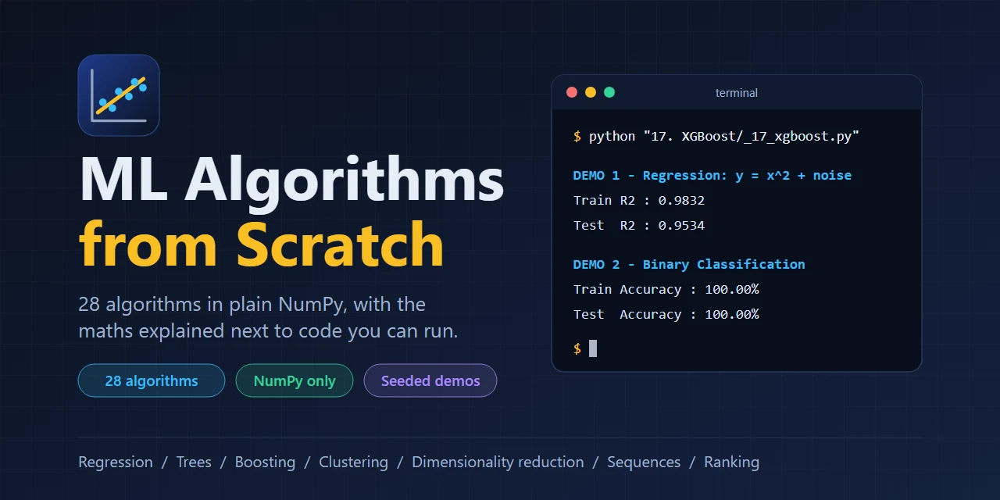
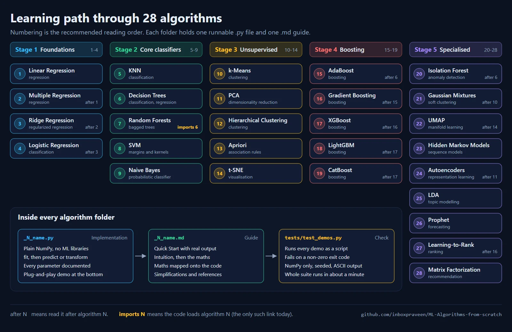

ML Algorithms from Scratch
Project Overview
ML Algorithms from Scratch is an open-source repository of 28 machine learning algorithms implemented in plain NumPy, from linear regression to XGBoost, UMAP and learning-to-rank. Each algorithm is a single Python file with a runnable demo, next to a guide that explains the mathematics and maps every formula onto the code that implements it. Run a file, watch the model train, then read why it works.

Unlike tutorials that call scikit-learn or TensorFlow, every algorithm here is built from first principles.
Most share a scikit-learn-like interface (fit, predict, score), so a model
you built in one chapter is used the same way in the next. The repository is meant for students, engineers
moving into machine learning, instructors who need reproducible examples, and anyone preparing for technical
interviews.
The Problem
- Libraries hide the maths: calling
fit()teaches little about what the algorithm does - Formulas and code live apart: most resources show one or the other, rarely both side by side
- Numbers nobody can reproduce: tutorials quote results without a seed or a runnable script
- Silent shortcuts: simplified implementations seldom say what they left out or what it costs
How It Is Built
The numbering is the recommended reading order, because each algorithm leans on ideas from the ones before it. The 28 algorithms fall into five stages, and every folder has the same shape: an implementation, a guide, and a test that runs the demo.

| Stage | Algorithms | What it covers |
|---|---|---|
| 1. Foundations | 1 to 4 | Fitting a model, regularization, gradient descent, classification |
| 2. Core classifiers | 5 to 9 | KNN, decision trees, random forests, SVM, Naive Bayes |
| 3. Unsupervised | 10 to 14 | Clustering, PCA, association rules, t-SNE |
| 4. Boosting | 15 to 19 | AdaBoost, gradient boosting, XGBoost, LightGBM, CatBoost |
| 5. Specialised | 20 to 28 | Anomaly detection, mixtures, UMAP, HMM, autoencoders, topics, forecasting, ranking, recommenders |
28 Algorithms
All implemented, each with a demo and a guide
NumPy Only
No machine learning library in the executable code
31,000+ Lines of Python
Documented classes and seeded demos
45,000+ Lines of Guides
Intuition, derivations and worked examples
What Each Algorithm Includes
- An implementation (
.py): class-based code, a docstring for every method that states its formula, every parameter documented with type, default, effect and typical range, and a plug-and-play demo at the bottom - A guide (
.md): a Quick Start with real output, intuition and analogies, the mathematics derived step by step and mapped onto the code, worked examples, and links to the original papers - A Simplifications section wherever the code departs from the canonical algorithm, naming the difference and what it costs
The demo builds a small synthetic dataset, trains the model and prints its scores. It uses NumPy only, is seeded, prints plain ASCII and finishes in seconds. This is the real output of the XGBoost file:
$ python "17. XGBoost/_17_xgboost.py"
DEMO 1 - Regression: y = x^2 + noise
Train R2 : 0.9832
Test R2 : 0.9534
DEMO 2 - Binary Classification: two Gaussian blobs
Train Accuracy : 100.00%
Test Accuracy : 100.00%The 28 Algorithms
Line counts are for the Python file and its guide. Each name links to the guide on GitHub.
| # | Algorithm | Family | Python lines | Guide lines |
|---|---|---|---|---|
| 1 | Linear Regression | Regression | 381 | 898 |
| 2 | Multiple Regression | Regression | 447 | 841 |
| 3 | Ridge Regression | Regularized regression | 484 | 1,133 |
| 4 | Logistic Regression | Classification | 785 | 1,287 |
| 5 | K-Nearest Neighbors | Classification | 740 | 1,392 |
| 6 | Decision Trees | Classification and regression | 1,225 | 1,642 |
| 7 | Random Forests | Ensemble (bagging) | 1,136 | 1,440 |
| 8 | Support Vector Machines | Classification | 790 | 1,783 |
| 9 | Naive Bayes | Probabilistic classification | 790 | 1,373 |
| 10 | k-Means Clustering | Clustering | 912 | 1,384 |
| 11 | PCA | Dimensionality reduction | 898 | 1,892 |
| 12 | Hierarchical Clustering | Clustering | 1,099 | 1,531 |
| 13 | Apriori | Association rules | 986 | 1,834 |
| 14 | t-SNE | Visualization | 1,084 | 2,142 |
| 15 | AdaBoost | Ensemble (boosting) | 1,103 | 1,983 |
| 16 | Gradient Boosting | Ensemble (boosting) | 1,367 | 2,140 |
| 17 | XGBoost | Ensemble (boosting) | 1,477 | 2,756 |
| 18 | LightGBM | Ensemble (boosting) | 1,735 | 1,668 |
| 19 | CatBoost | Ensemble (boosting) | 1,746 | 1,925 |
| 20 | Isolation Forest | Anomaly detection | 1,267 | 1,213 |
| 21 | Gaussian Mixture Models | Probabilistic clustering | 1,516 | 1,654 |
| 22 | UMAP | Manifold learning | 1,322 | 1,213 |
| 23 | Hidden Markov Models | Sequence models | 1,506 | 2,141 |
| 24 | Autoencoders | Representation learning | 1,525 | 1,964 |
| 25 | Latent Dirichlet Allocation | Topic modelling | 1,195 | 1,487 |
| 26 | Prophet | Forecasting | 1,454 | 1,500 |
| 27 | Learning-to-Rank | Ranking | 1,068 | 1,172 |
| 28 | Matrix Factorization | Recommendation | 1,442 | 2,250 |
Verification
A small pytest suite runs every algorithm as a script in a fresh interpreter and fails on a non-zero exit code, empty output or any non-ASCII character. It also checks that the folders are numbered 1 to 28, that every guide opens with a Quick Start, and that every link in the README resolves. That is 58 checks, and all of them pass.
| Python | NumPy | All 28 demos |
|---|---|---|
| 3.10.20 | 2.2.6 | 57 s |
| 3.11.18 | 2.4.6 | 55 s |
| 3.12.13 | 2.5.1 | 45 s |
Wall-clock time on one Windows machine. The slowest single demo is UMAP at about 17 seconds on Python 3.11.
Beyond running cleanly, each guide records how its results compare with scikit-learn or SciPy where an equivalent exists, and with the original paper or a hand-computed case where none does.
Getting Started
The project needs Python 3.10 or newer and NumPy:
# 1. Clone the repository
git clone https://github.com/inboxpraveen/ML-Algorithms-from-scratch.git
cd ML-Algorithms-from-scratch
# 2. Install NumPy, the only requirement
pip install numpy
# 3. Run any algorithm
python "1. Linear Regression/_1_linear_regressions.py"
# 4. Optional: run the whole test suite (about a minute)
pip install pytest
python -m pytestQuick Start Example
Each algorithm lives in its own folder, so add the folder to the path and import the class. The comments show the output of a real run:
import sys
import numpy as np
sys.path.append("1. Linear Regression")
from _1_linear_regressions import LinearRegression
# Years of experience vs salary
X_train = np.array([1, 2, 3, 4, 5, 6, 7, 8, 9, 10]).reshape(-1, 1)
y_train = np.array([30000, 35000, 40000, 45000, 50000,
55000, 60000, 65000, 70000, 75000])
model = LinearRegression()
model.fit(X_train, y_train)
print(model.predict(np.array([[11], [12], [15]]))) # [ 80000. 85000. 100000.]
print(f"R2 score: {model.score(X_train, y_train):.4f}") # R2 score: 1.0000
coeffs = model.get_coefficients()
print(f"y = {coeffs['intercept']:.2f} + {coeffs['slope']:.2f}x") # y = 25000.00 + 5000.00xA Look at the Source: Ridge Regression
The code is written to be read. This excerpt from the Ridge regression fit() shows the regularized
normal equation in NumPy, including one detail that is easy to miss: the intercept is left unpenalized by zeroing
a single entry of the identity matrix. It also solves the linear system instead of inverting the matrix, and falls
back to the pseudo-inverse when the system is singular, which a naive inverse handles silently and wrongly.
# Excerpt from RidgeRegression.fit()
X_with_bias = np.hstack((np.ones((X.shape[0], 1)), X))
identity = np.eye(X_with_bias.shape[1])
identity[0, 0] = 0 # Don't penalize the intercept
regularization_term = self.alpha * identity
A = X_with_bias.T @ X_with_bias + regularization_term
b = X_with_bias.T @ y
# Solve the system instead of forming inv(A), and fall back to the
# pseudo-inverse when A is singular
if np.linalg.cond(A) < 1.0 / np.finfo(float).eps:
self.coefficients = np.linalg.solve(A, b)
else:
self.coefficients = np.linalg.pinv(A) @ bDesign Decisions
- NumPy only: to focus on fundamentals, since knowing what NumPy operations do explains what libraries do internally
- One file per algorithm: each file can be copied into a notebook or a course on its own. The single exception is Random Forests, which reuses the Decision Tree class from chapter 6
- A consistent interface:
fit,predictandscorewhere they make sense,fit_transformfor dimensionality reduction, and a natural API for algorithms such as Apriori or the HMM - Deterministic demos: every demo is seeded, so the numbers in the guides can be reproduced
- Honesty about shortcuts: a guide states where it simplifies the canonical algorithm instead of leaving readers to find out
Intended Use and Limits
These are reference implementations that put clarity and correctness ahead of speed. They suit teaching, interview preparation, prototyping an idea, and use as a readable oracle for checking another implementation. They are not a replacement for optimized libraries: a from-scratch tree here can be 20 to 300 times slower than scikit-learn's while producing similar predictions, and there is no histogram-based split finding, multithreading, GPU kernels or distributed training. For real data volumes, use scikit-learn, XGBoost, PyTorch or TensorFlow.
Contributing and Support
Contributions are welcome: bug reports, clearer explanations, checks against the canonical algorithm and new algorithms. The contributing guide covers setup, the rules for code and guides, and how to run the tests. If the project helped you, sponsoring it funds new algorithms and keeps the guides current.
Resources & Links
- GitHub Repository
- Architecture Notes
- Contributing Guide
- Sponsor the Project
- NumPy Documentation
- scikit-learn Documentation